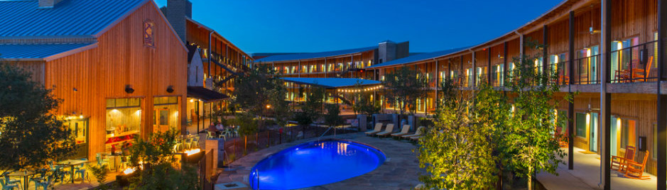
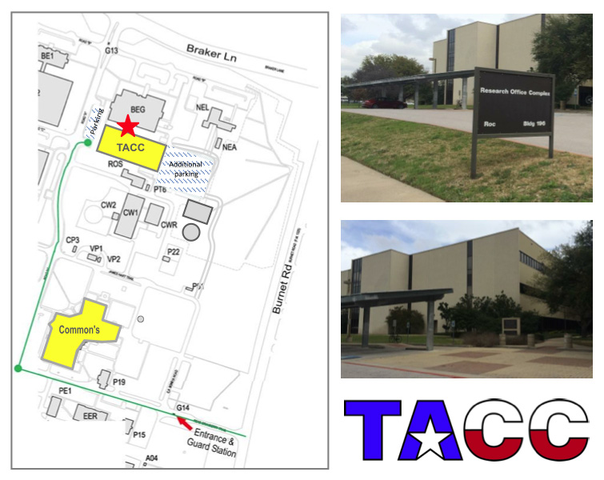

<div class="tab-pane" id="tab_4">
	<div class="panel-group" id="accordion4">
		<div class="panel panel-default">
			<div class="panel-heading">
				<h4 class="panel-title">
					<a href="#accordion4_1" data-parent="#accordion4" data-toggle="collapse" class="accordion-toggle">Hotel Information</a>
				</h4>
			</div>
			<div class="panel-collapse collapse" id="accordion4_1">
				<div class="panel-body">
					

					<p><strong>Lone Star Court</strong><br />
					10901 Domain Drive<br />
					Austin, TX 78758</p>
 
					<p>The booking code to make reservations is: <strong>1503UNIVER_001</strong>. Reservations can be <a href="https://reservations.lonestarcourt.com/lonestarcourt/availability.asp?startDate=03/24/2015&endDate=03/27/2015&requesttype=invBlockCode&code=1503UNIVER_001" target="_blank">made online <i class="fa fa-external-link-square" title="external link"></i></a> or through the central reservations office, <a href="tel:18555963398">1-855-596-3398 <i class="fa fa-phone-square"></i></a>.</p>
				</div>
			</div>
		</div>
		<div class="panel panel-default">
                        <div class="panel-heading">
                                <h4 class="panel-title">
                                        <a href="#accordion4_2" data-parent="#accordion4" data-toggle="collapse" class="accordion-toggle">Directions to TACC</a>
                                </h4>
                        </div>
                        <div class="panel-collapse collapse" id="accordion4_2">
                                <div class="panel-body">
					<p>TACC's main office is located in the Research Office Complex (ROC / Bldg 196) on the <a href="http://www.utexas.edu/maps/prc/areas/ne.html" target="_blank">J.J. Pickle Research Campus <i class="fa fa-external-link-square" title="external link"></i></a> (PRC) of The University of Texas at Austin. All visitors must use the Burnet Road entrance.</p>

					<p>Texas Advanced Computing Center<br />
					10100 Burnet Road<br />
					ROC Bldg 196, Suite 1.101<br />
					Austin, Texas 78758</p>

					<p>Walking directions front the LoneStar Court to TACC can be found <a href="https://www.google.com/maps/dir/10100+Burnet+Road,+Austin,+TX/Lone+Star+Court,+10901+Domain+Drive,+Austin,+TX+78758/@30.3907831,-97.7306984,16z/data=!3m1!4b1!4m14!4m13!1m5!1m1!1s0x8644cb896afc098f:0x3a6bbf470ba1c215!2m2!1d-97.726589!2d30.387302!1m5!1m1!1s0x8644cc768d66a8b1:0xbcbd71923388f7cd!2m2!1d-97.726149!2d30.395199!3e2" target="_blank">here <i class="fa fa-external-link-square" title="external link"></i></a>.</p>

					<p>Parking is available in lots on both the east and west sides of the ROC building. Visitor permits will be issued, free of charge, from the TACC main office. You may park in the covered visitor parking area, or any open space in front of TACC. Upon arrival, walk up the brick pathway to the building entrance, TACC's office is on the right. Please check in with the receptionist to obtain a parking pass. You will have to return to your vehicle to display the dashboard parking permit.</p>

					<p><em>Note: All visitors must now enter the Pickle Campus via the Burnet Rd. entrance, if you are driving. The Braker Lane entrance is for staff only. If you are walking, you may enter the campus through the Braker Lane entrance. Visitor vehicles may exit campus through the Burnet Road or Braker Lane exit gates.</em></p>

					
                                </div>
                        </div>
                </div>
	</div>
</div>
